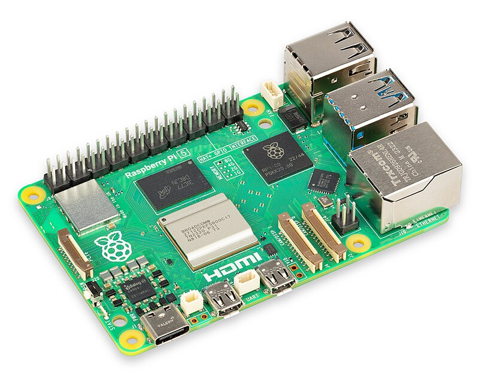
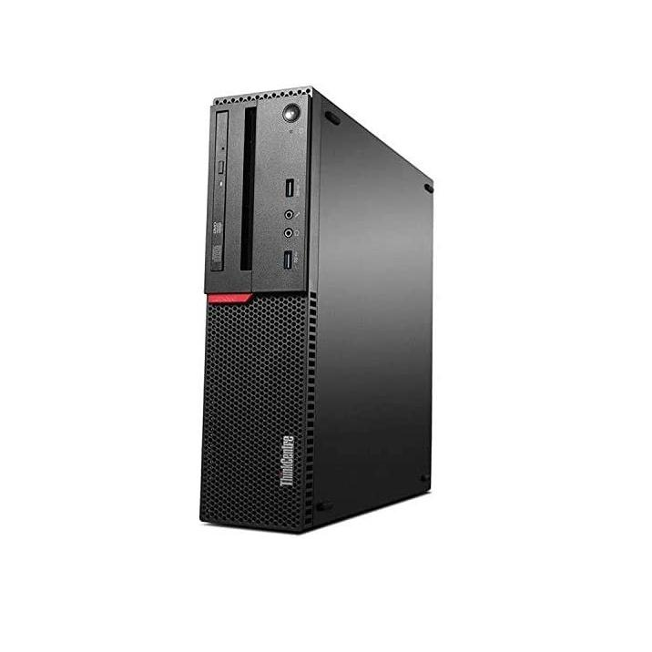
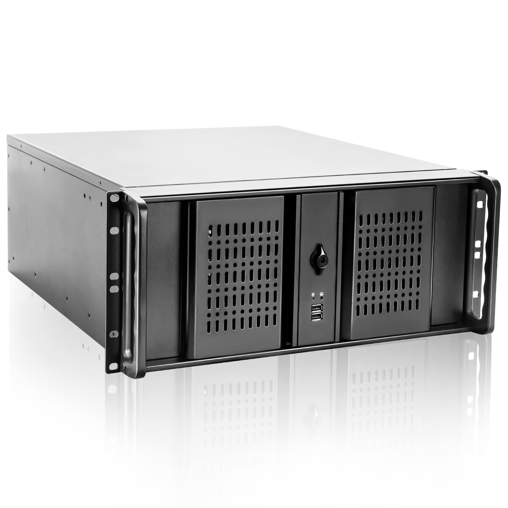

So you want to make your own homelab? We can get started on that!
You can use any computer, whether it can be a small or a big one!
  First one is a small computer, which can do simple stuff like host files;
Second one is a simple computer but can be turned into a server;
Last one is a server that can be mounted on a server rack.
These are hardware I would want to have on my server
We will need some services to host. Otherwise, what is the point of having a server?
An operating system is the essential part of a server. Without it, nothing will run!
It has been my main server since 2020, it currently hosts all of my files and uses 13 TB. It also can host other services like Jellyfin, a Minecraft server and some Discord bots.
I host all public websites in this server. Whether its for my own services or services for my friends. Oh yeah! These are publicly accessible websites like my cloud server, and a wiki that I am hosting right now.
This is a recent addition as it is being used as my main VM server, where I could easily spin up a new virtual machine without it slowing down my main machine and able to do complicated tasks. This computer was refurbished and bought from Newegg for $188.99 (with taxes) / $179.99 (without taxes), and replaced the 256 GB SSD with the current SSDs below.